概略
ReciProは(主に電子顕微鏡を使って)結晶を研究する人のためのフリーソフトウェアです。本ソフトは結晶の構造情報を利用して様々な幾何学計算、結晶学計算をおこないます。本ソフトの特徴は 結晶構造の描画(ボンド、多面体、結晶面などの表示も可) Stereonetによる方位描画 電子線回折図形の描画 などです。ReciProは空間群データベースを内蔵しており、International Tables for Crystallography Volume Aに含まれる230個の空間群に加えて、軸の変換を考慮した全 530 種の空間群の対称要素、ワイコフ位置、消滅測などが利用できます。さらに、元素に関する原子価や半径などの情報、原子の散乱振幅のデータが含まれています。 実行環境など
必要動作条件
.Net Framework 4.8以上 本ソフトは.Net Framework 4.0で動作するように設計しています。 .Netアプリは中間コードを実行時にコンパイルしますので、Windowsのバージョンや32/64bit環境を問わず、.Netさえインストールされていれば動作します。 推奨動作条件
» メモリ: できれば >4GB位 » CPU: できれば >2GHz & >4コア ソフト内部ではマルチスレッド化した演算を多用しています。そのため、複数のコアを内蔵したCPUを用いた方が、より快適に動作すると思います。 他のソフトとの連携
また別途「CSManager」を利用すれば3万種類以上の結晶構造データベースが利用可能です。 メインウインドウ
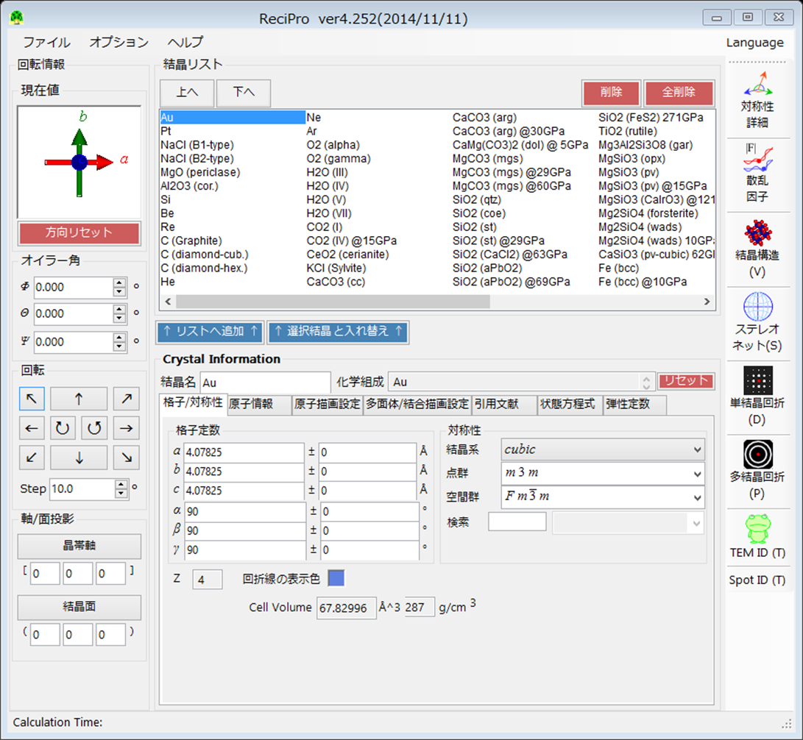 ファイルメニュー
ファイル
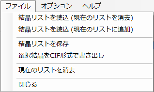 ファイルの読み書き関連 結晶リストを読込(現在のリストを消去)結晶リストファイル(拡張子 xml)を新たに読み込みます。 結晶リストを読込(現在のリストに追加)結晶リストファイル(拡張子 xml)を読み込みます。読み込んだ結晶リストは現在のリストの後に付け加えられます。 結晶リストを保存
結晶リストファイル(拡張子 xml)を書き込みます。 選択結晶をCIF形式で書き出し
選択された結晶をCIF形式で書き出します。 現在のリストを消去
結晶リストを消去します 閉じる
プログラムを終了します。 オプション
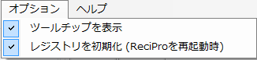 ツールチップを表示
チェックしてある時はフォーム上のボタンやテキストボックスなどにツールチップ(説明やヒント)が表示されます。 レジストリを初期化
チェックしてある時はReciProを再起動した際にレジストリが初期化されます。。 ヘルプ
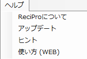 ReciProについて
著作権、バージョン情報などを表示します。 アップデート
インターネットにつながっている場合はReciProを最新のバージョンに更新します。 ヒント使用する上でのヒントや開発情報などを表示します。 使い方(Web)
インターネットにつながっている場合はヘルプページ(このページ)を開きます。 ツールメニュー
ReciProには主に4つの機能があり、アイコンをクリックすることで各ウィンドウが立ち上がります。結晶の回転情報は各ウィンドウ間で同期しており、どのウィンドウで結晶回転させてもほかのウィンドウに反映されます。 結晶構造(Structure Viewer)
結晶の構造を3次元的に描画します。結晶面、単位格子、配位多面体なども描画できます。詳しくは結晶構造の項にて。 ステレオネット
結晶の面あるいは軸の方向をステレオネット上に描画します。詳しくはステレオネットの項にて。 単結晶回折
電子線回折における回折斑点パターンおよび菊池線パターンを描画します。詳しくは単結晶回折の項にて。 TEM ID
実際に撮影した電子線回折写真の指数づけをおこないます。詳しくはTEM IDの項にて。 回転情報
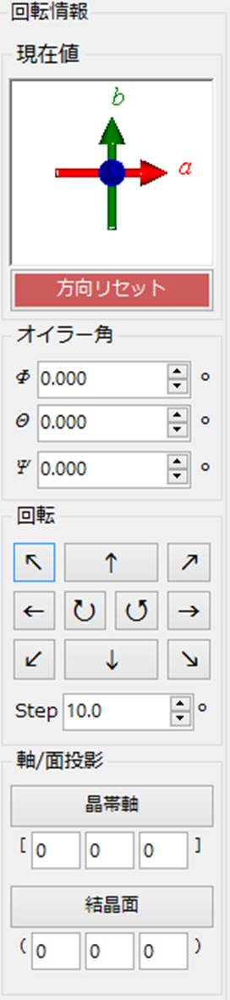 上部には結晶の回転状態が表示されます。マウスでドラッグすることで回転することができます。それぞれ
赤: a軸, 緑: b軸, 青: c軸 として表示されています。 方向リセット
回転状態をリセットします。 オイラー角
オイラー角を表示･設定します。 回転
矢印ボタンを一回おすと、矢印の方向に角度Step分だけ回転します。 軸/面投影
結晶の軸あるいは面に対して投影します。 晶帯軸
指定した晶帯軸をディスプレイ平面の垂直手前方向に設定し、結晶を回転します。このときこの軸に垂直なPlaneが設定されている(=内積が0になっている)とその面の方向が画面上向きに設定されます。 結晶面
指定した結晶面の法線をディスプレイ平面の垂直手前方向に設定し、結晶を回転します。このときこの面に垂直なAxisが設定されている(=内積が0になっている)とその晶帯軸の方向が画面上向きに設定されます。 結晶リスト
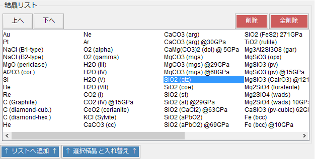 プログラムに読み込まれている結晶のリストを表示/変更します。リスト内から結晶を選択すると、下の画面に詳細情報が表示され、計算対象の結晶として設定されます。 上へ
選択した結晶の順番を上にします。 下へ選択した結晶の順番を下にします。 削除
選択されている結晶をリストから削除します。 全削除
リスト中のすべての結晶を削除します。新たに結晶を追加するとき、あるいはすでにある結晶の情報を変更するには「Crystal Information」(下記参照)で結晶を設定して「Add」あるいは「Replace」を実行します。 リストへ追加設定した結晶をリスト最後尾に追加します。 選択結晶と入れ替え
設定した結晶を、リスト中の選択している結晶と入れ替えます。 Crystal Information
結晶の格子定数/対称性/原子位置などを設定/表示します。 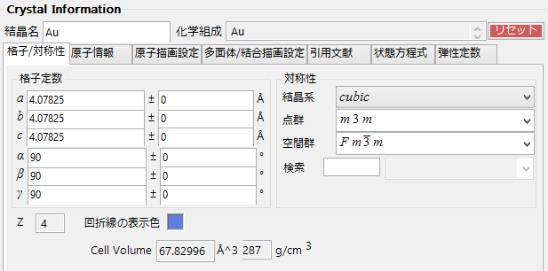 この項目は長いので別ページ:Crystal Information Helpで説明しています。 結晶構造
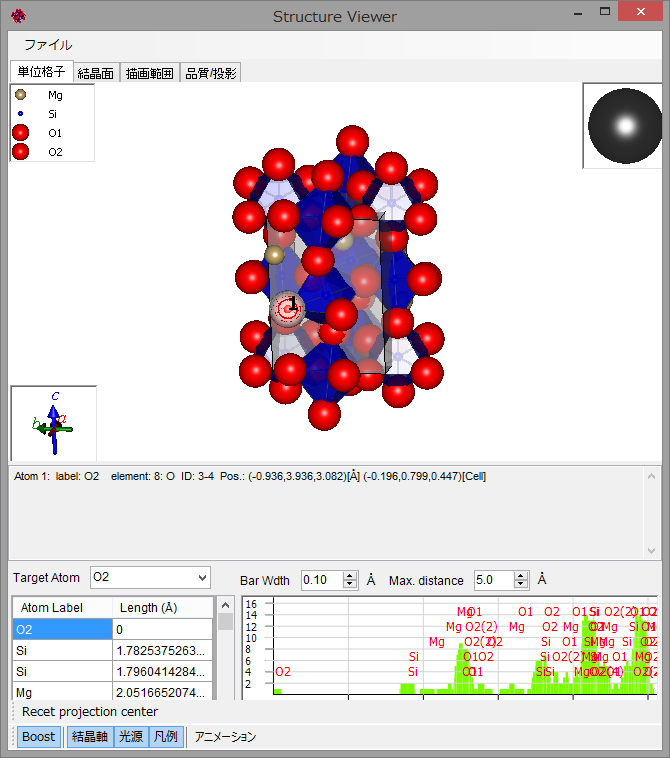 OpenGLによる結晶構造描画をおこないます。原子の色、ボンド・多面体の設定はメインウィンドウの方で行うか、右クリックで原子の詳細情報を表示させて変更してください。 ファイルメニュー
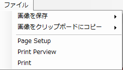 画像を保存
描画画像をファイルに保存します。ファイル名、解像度を指定して保存してください。 画像をクリップボードにコピー
描画画像を解像度を指定してクリップボードにコピーします。適当なソフトに貼り付けてください。 Print
画像をプリントします。 描画ウィンドウ
結晶構造が表示されます。 マウス操作
左ドラッグ:
回転 中ドラッグ:
平行移動 右ドラッグ/ホイール:
拡大、縮小 左ダブルクリック:原子選択/解除 右クリック(原子選択時):
原子の詳細情報表示 タブメニュー
単位格子
単位格子を表示するかどうかを指定します。「単位格子を表示」をチェックすると表示され、同時に詳細な設定が可能になります。 透明度
単位格子の平行移動量を指定します。a,b,c軸それぞれ独立に指定できます。aに"0.5"と入力すればa軸方向に、a軸の長さの0.5倍分だけ平行移動した単位格子が描画されます。 面を表示
単位格子の面を描画するかどうか設定します。 Alpha: 単位格子面の透明度を指定します。 Plane Color: 単位格子面の色を設定します。 辺を表示
単位格子の稜(フレーム)を描画するかどうかを設定します。 Line Width: 稜の太さを設定します。 Edge Color: 稜の色を設定します。 サブセルを表示
単位格子の部分格子を描画するかどうかを設定します。 a,b,c: それぞれa,b,c軸を何分割して表示するか設定します。 結晶面
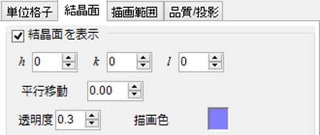 結晶面を描画するかどうかを指定します。Show
lattice planeをチェックすると表示され、同時に詳細な設定が可能になります。 h,k,l: 描きたい結晶面の指数を指定します。 Transration: 結晶面の法線方向に平行移動させる量を設定します。"1"と入力するとちょうど結晶面の一周期分だけ移動してもとに戻ります。 Alpha: 結晶面の透明度を指定します。 Plane Color: 結晶面の色を設定します。 描画範囲
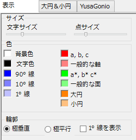 結晶の描画範囲を指定します。 a,b,c: 各軸に対してどれだけの範囲を描画対象とするかを指定します。 品質/投影
3D品質
球の緯線と経線の分割量を指定します。この値を大きくすると綺麗に描画されますが、処理は遅くなります。 投影
投影方法を指定します。 無限遠投影: 無限遠からの投影を行います。遠近感がなくなります。 有限視野角: 遠近感のある投影を行います。近くのものほど大きく見えます。遠近感の度合いはスライドバーで調節できます。 ツールバー
凡例
原子の色、大きさを凡例表示します。 光源
光源の位置(向き)を指定します。左ドラッグで変更できます。 結晶軸
軸の向きを表示します。軸の大きさは格子定数を反映しています。このボックスでもマウスによる回転ができます。 ステレオネット
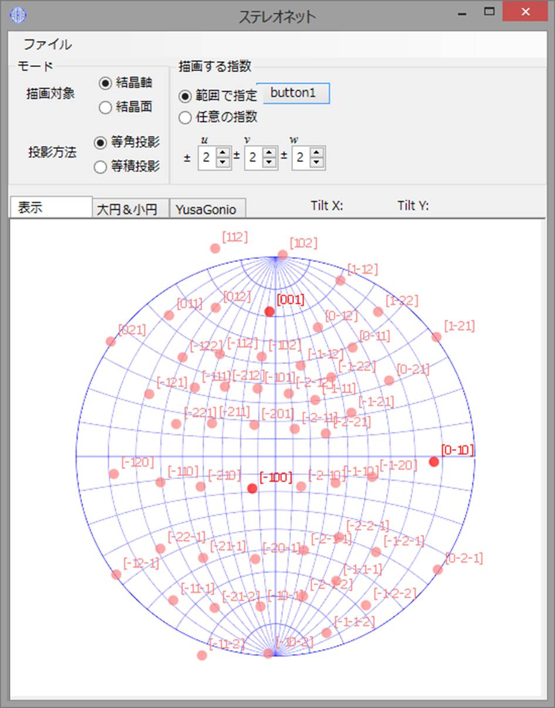 ステレオネット投影による結晶面・軸の方位関係を表示します。 モード
描画対象
結晶軸:
結晶軸を描画します。 結晶面:
結晶面を描画します。 投影方法
等角投影:
等角投影を計算します。面積は保存されません。 等積投影:
等積投影を計算します。角度は保存されません。 描画する指数
指数の範囲を指定します。 描画ウインドウ
マウス操作
左ドラッグ:
回転 右ドラッグ:
拡大 右クリック:
縮小 タブメニュー
表示
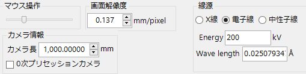 サイズ
点の大きさや文字の大きさを指定します。スライドバーで調節できます。 文字サイズ: ステレオネット上の点の横に示す指数の大きさを調整します。 点サイズ: ステレオネット上の点の大きさを調整します。 色
点、文字、ステレオネット輪郭線などの色の設定を行います。 輪郭
ステレオネット輪郭線の表示方法を指定します。 大円＆小円
大円や小円を描画します。まだ作りかけです。 単結晶回折
単結晶からの電子線回折スポットの描画、あるいは菊池線の描画を行います。 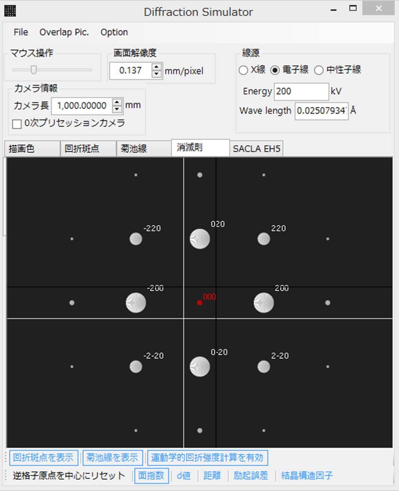 ファイルメニュー
File
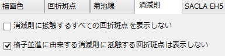 Save Image描画画像をファイルに保存します。ファイル名、解像度を指定して保存してください。 Copy Image to Clipboard
描画画像を解像度を指定してクリップボードにコピーします。適当なソフトに貼り付けてください。 Print
画像をプリントします。 Overlap Pic.
詳しくはOverlap
Pictureの項にて。 PolyCrystalline Pattern
詳しくはPolyCrystalline
Patternの項にて。 描画ウィンドウ
マウス操作
左ドラッグ:
回転 右ドラッグ:
拡大 右クリック:
縮小 観察条件
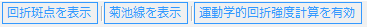 TEMの観察条件を指定します。 マウス操作
マウスで回転操作をする際のマウス感度を設定します。 画面解像度
1mmあたりのディスプレイのピクセル数を設定します。この値は単なるスケールの問題なので、実際の値でなくてもかまいません。マウスによる拡大縮小で変更されるパラメータです。 カメラ情報
カメラ長
カメラ長を入力してください。 ０次プリセッションカメラ
ゼロ次ラウエゾーンのプリセッションカメラ像をシミュレートします。 線源
Energy
加速電圧を入力してください。電子線の波長は加速電圧から相対論補正をして求めています。 タブメニュー
描画色
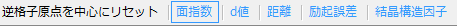 スポット、文字、菊池線などの色の設定を行います。 回折斑点
回折スポットモードのときの条件を指定します。 スポットサイズ
回折スポットの大きさをnmの逆数で入力してください。大雑把に言ってこのパラメータは制限視野絞りの大きさとレンズ収差に依存します。 励起誤差
励起誤差をnmの逆数で入力します。大雑把に言ってこのパラメータは試料の薄さに依存します。 指数の文字サイズ
文字の大きさや菊池線の太さを設定します。スライドバーで調節できます。 菊池線
菊池線モードのときの条件を指定します。 表示する菊池線の下限
描画する菊池線の面間隔の下限を指定します。 線の太さ
描画する菊池線の太さを指定します。 消滅則
消滅側にかかわる設定を行います。一般にらせん軸、映進面によるスポットは多重反射を起こすため、消滅則を満たしていても有意な強度で観察されることがあります。一方、格子並進による消滅則はどんな場合でも成立します。 消滅則に抵触するすべての回折斑点を表示しないこれをチェックすると消滅則に抵触するスポットはすべて描画しません。 格子並進に由来する消滅則に抵触する回折斑点は表示しないこれをチェックすると格子並進から導かれる消滅則に抵触するスポットのみ描画対象から外します。 ボトムツール
回折斑点を表示
チェックされていると回折スポットを描画します。 菊池線を表示
チェックされていると菊池線を描画します。 運動学的回折強度計算を有効
チェックされていると運動学的な強度計算に従って、回折斑点の大きさを変化させます。チェックするとすべての回折斑点に対して構造因子を求めるため、計算に時間がかかることがあります。
逆格子原点を中心にリセット
逆格子原点を画面の中心位置にリセットします。 面指数
チェックされていると指数を表示します。 d値
チェックされているとd値(面間隔)を表示します。 距離
逆格子原点からの距離を表示します。 励起誤差
励起誤差(逆格子点とエワルド球からの距離)を表示します。 結晶構造因子
結晶構造因子(散乱の振幅)を表示します。 多結晶回折
メインウィンドウで選択した結晶による、与えられた条件での多結晶ディフラクションパターンをシミュレーションします。透過光学系での平面検出器(IPなど)に現れるデバイリングパターンシミュレーションに対応しています。 完全にランダムな配向性をもつ多結晶体集合からのデバイリングパターンを計算するときはSimulated
Random RotationsからRandom Rotationを実行してください。 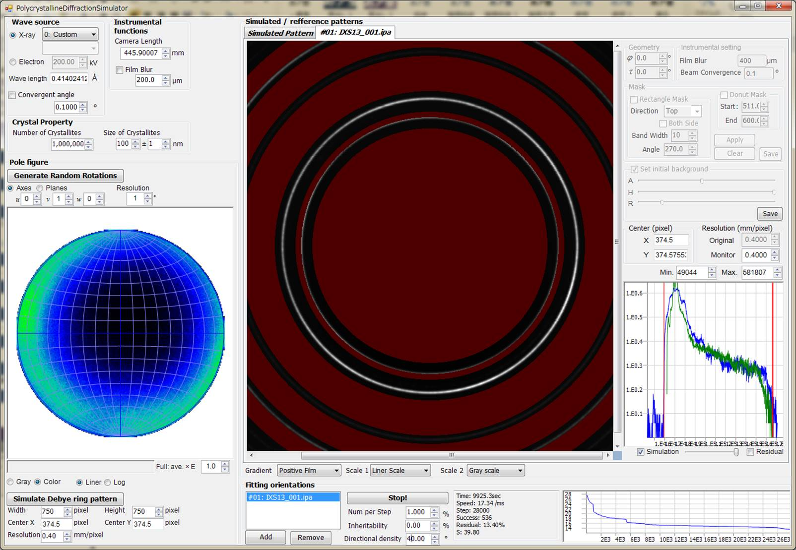 Instrumental Functions
X-ray/Electron
入射線の線源を選択してください。 放射光X線であれば、元素を「Custom」と選択し、その波長あるいはエネルギーを入力します。 特性X線であれば、その元素とラインを選択します。 電子線であれば加速電圧を設定します。 Convergent Angle
入射線の収束(/発散)角を設定します。おそらくSP8BL10XUでは0.05°程度、BL4では0.01°程度だと思われます。 Camera Length
カメラ長を設定します。 Film Blur
検出器のぼやけ具合を設定します。与えられた値を半値幅とするローレンツ関数を用いて、画像全体をコンボリューションします。 Crystal Property
Number of crystallites
シミュレートする結晶の数を指定します。 Size of crystallites
結晶子のサイズ。指定した平均値、偏差の対数正規分布乱数を発生し、サイズを計算します。現時点では球形の粒子を仮定しています。 Pole Figure
角度密度を等積ステレオ投影(シュミットネット)します。 Generate Random Rotation
完全にランダムな配向性をもつ多結晶体集合を発生させます。結晶子の数やサイズは前述Crystal Propertyに依存します。 Axes/Planes
表示する晶帯軸あるいは結晶面の指数を指定します。 Resolution
ステレオ投影図上で表示する角度密度分布の解像度を決定します。指定した角度が張る面積に相当する矩形を単位として、密度分布を表示します。 Full: ave.×E
表示する最大密度を10の累乗で指定します。この値を超えた密度は飽和します。 Gray/Color & Liner/Log
表示するスケールがグレースケールかカラー(寒暖色)スケールか、さらに線形スケールか対数スケールかを選択します。 Simulate Debye ring Pattern
上述の「Generate Random
Rotation」で多結晶体を生成した後、このボタンを押すと、設定したInstrumental Factorに沿ったデバイリングパターンをシミュレートします。 Width/Height
生成する画像の幅/高さを指定します。 Center X/Y
生成する画像の中心ピクセル位置を指定します。 Resolution
生成する画像の解像度(mm/pixel)を指定します。この値が大きいと計算に時間がかかりますのでご注意ください。 TEM ID
実際に撮影した電子線回折写真の指数づけをおこないます。 TEM Condition
電子線回折写真撮影時の条件を入力します。 Acc. Voltage
加速電圧を入力してください。電子線の波長は加速電圧から相対論補正をして求めています。 Camera Length
カメラ長を入力してください。 Photo
電子線回折 Pattern
近接する３つの回折斑点がなす三角形の形を入力してください。入力する値は、三辺の長さ、もしくはニ辺の長さと夾角が選べます。 Holder Condition
|